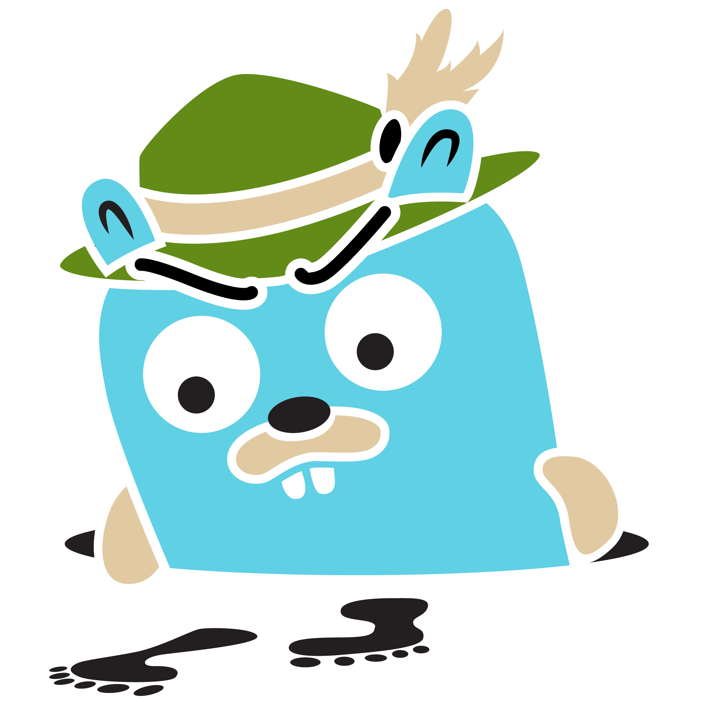

Concurrency-First Development in Golang
- Use Cases
- Resourcefulness
- Concurrency
- Actors
- Safety
Adam Krieger
- Senior Consultant
- Technical Architect
- Senior Software Developer
This Talk
https://github.com/adamkrieger/ak-talkshttps://github.com/adamkrieger/iacfreedom
Go is great for...
- Microservices
- Task Compute
- Embedded
- Load Balancers
- Orchestrators
- Message Hubs
- Sidecars
- Service Registries
- REST
- Scripting
Built in Go




Lambda (Code)
package main
import (
"github.com/aws/aws-lambda-go/events"
"github.com/aws/aws-lambda-go/lambda"
)
func main() {
lambda.Start(YourCodeHere)
}
func YourCodeHere(request events.APIGatewayProxyRequest) (
response events.APIGatewayProxyResponse, err error) {
//Congratulations, you're serverless!
}Lambda (Build)
#!/usr/bin/env bash
mkdir -p bin
GOOS=linux go build -o bin/main main.go
mkdir -p binpkg
zip -rj binpkg/your_app.zip binResourcefulness
Base Res Mem (MacOS, htop)
| 1 x | 1k x | |
| java8 | 28032 kb | 89436 kb |
| go 1.9 | 12700 kb | 12532 kb |
Base Res Mem (MacOS, htop)
| 1 x | 1k x | 1m x | |
| java8 | 28032 kb | 89436 kb | OOME |
| go 1.9 | 12700 kb | 12532 kb | 12440 kb |
http://tleyden.github.io/blog/2014/10/30/goroutines-vs-threads/
Docker Image Size
| openjdk:8-jre-stretch | 145 MB |
| dotnet/core/runtime:2.2.5-alpine | 88.1 MB |
| golang:alpine | *350 MB |
| alpine:latest | 5.53 MB |
Java Data Structures
- Array
- List
- ArrayList
- Map
- Set
- Queue
- Collection
- Enumeration
- Navigable(Map/Set)
- Sorted(Map/Set)
Go Data Structures
//Array
arrOf := []string{"one", "two", "three"}
//Map
mapOf := map[string]int {
"one": 1,
"two": 2,
"three": 3,
}Duck Typing
type Worker interface {
DoWork() error
Description() string
}
type workerImpl struct {
description string
}
func (wi *workerImpl) DoWork() error {
//TODO
return nil
}
func (wi *workerImpl) Description() string {return wi.description}Interfaces
- Refs are struct pointers
- One per Use Case
Arrays (and Slices)
workerArray := []Worker{i1, i2, i3}
// Array Slice--v
workerArray = workerArray[1 : len(workerArray)-1]
for wIndex, worker := range workerArray {
fmt.Println(workerArray[wIndex].Description())
_ = worker.DoWork()
}Stack
workerStack := []Worker{}
//Push
workerStack = append(workerStack, item)
//Pop
next := workerStack[len(workerStack)-1]
workerStack = workerStack[:len(workerStack)-1]Queue
workerQueue := []Worker{}
//Enqueue
workerQueue = append(workerQueue, item)
//Dequeue
next := workerQueue[0]
workerQueue = workerQueue[1:]Set
workerSet := map[Worker]interface{}{
i1: nil,
i2: nil,
}
//Delete
delete(workerSet, i1)
//Add
workerSet[i1] = nilResourcefulness
- Small Initial Footprint
- Cross-compile rather than multi-platform
- Versatile Data Structures
Concurrency
- 'go' Keyword
- channels
Divergence
resultChan := make(chan *result)
//Async
go doWorkAsync(resultChan)
//Sync
result := doWork()
//Wait for Async to catch up
resultAsync := <-resultChan
//Merge results
fmt.Println(result.success && resultAsync.success)Convergence
tasks := map[int]*taskData{
1: &taskData{resultChan: retChan, input: "1"},
2: &taskData{resultChan: retChan, input: "2"},
3: &taskData{resultChan: retChan, input: "3"},
}
for k, task := range tasks {
go doWork(k, task)
}
for range tasks {
result := <-retChan
fmt.Println(result.correlation, " - ", result.success)
}How is this Different?
Mutexes vs Channels
- At Rest vs In Motion
- Box vs Pipe
Actors
- Make local decisions
- Process/Send messages
- Manage other Actors
- Can only affect others via Messaging
Actor Patterns
- Generators
- Processors
- Data Managers
- Actor Managers
Generators
Processors
Data Managers
Actor Managers
Best Practice
- Isolate concurrency from logic
- Pass the Baton
- Protect Scope
How
The End
- Questions Welcome
- Feedback Appreciated